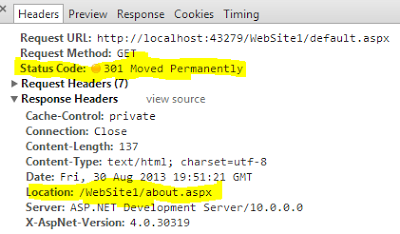

Is the client supposed to behave differently? How?
Answer
Status 301 means that the resource (page) is moved permanently to a new
location. The client/browser should not attempt to request the original
location but use the new location from now on.
Status 302 means that the resource is temporarily located somewhere else, and
the client/browser should continue requesting the original url.
Suggest
When a search engine spider finds 301 status code in the response header of a
webpage, it understands that this webpage no longer exists, it searches for
location header in response pick the new URL and replace the indexed URL with
the new one and also transfer pagerank.
So search engine refreshes all indexed URL that no longer exist (301 found)
with the new URL, this will retain your old webpage traffic, pagerank and
divert it to the new one (you will not lose you traffic of old webpage).
Browser: if a browser finds 301 status code then it caches the mapping of the
old URL with the new URL, the client/browser will not attempt to request the
original location but use the new location from now on unless the cache is
cleared.

When a search engine spider finds 302 status for a webpage, it will only
redirect temporarily to the new location and crawl both of the pages. The old
webpage URL still exists in the search engine database and it always attempts
to request the old location and crawl it. The client/browser will still
attempt to request the original location.

Read more about how to implement it in asp.net c# and what is the impact on
search engines - http://www.dotnetbull.com/2013/08/301-permanent-
vs-302-temporary-status-code-aspnet-csharp-Implementation.html